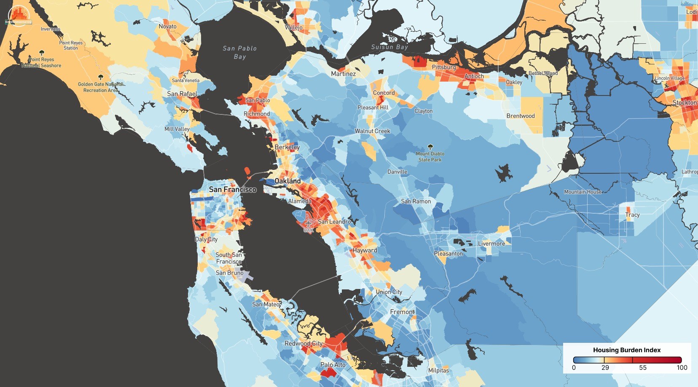
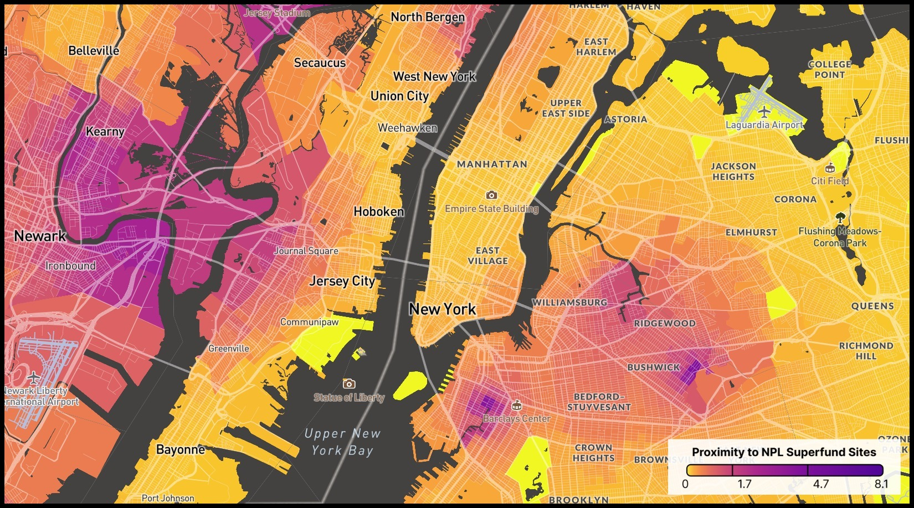

EnvironmentalEQ

Open this viewHousing Cost in the SF Bay Area, CA
 Open this view
Open this view
Asthma Rate in Miami, FL

Open this viewSuperfund Site Proximity in New York City, NY
 Open this view
Open this view
Urban Heat Effect in Los Angeles, CA
EnvironmentalEQ is the authoritative pipeline for local environmental, demographic, public health, and socioeconomic data in the United States. Data scientists, researchers, and policymakers at leading think tanks and U.S. policy offices use the atlas to understand how these indicators interact at the census-tract and county level — and to inform policy.